Онбординг в приложении
Первая сборка на SwiftUI: 14 экранов от хука до главного, дизайн Oxblood и шрифты T11, кнопка отладки, два варианта — с анимацией и статичный. Голос в демо — стоковый; режим Live читает сцену её собственным голосом.
Motion или статично
Все экраны
{kind=link}
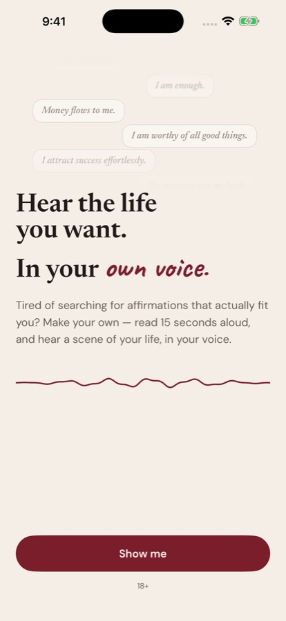
{kind=link}
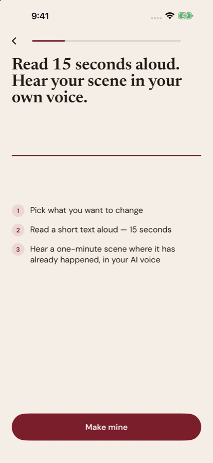
{kind=link}
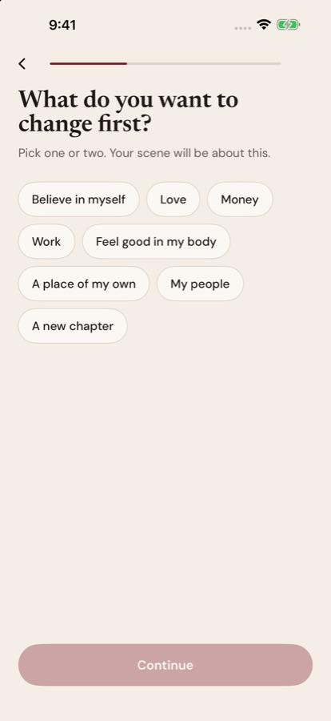
{kind=link}
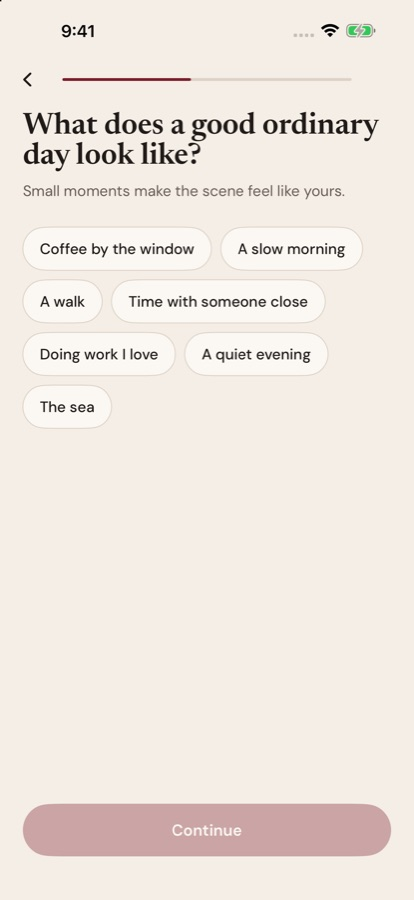
{kind=link}
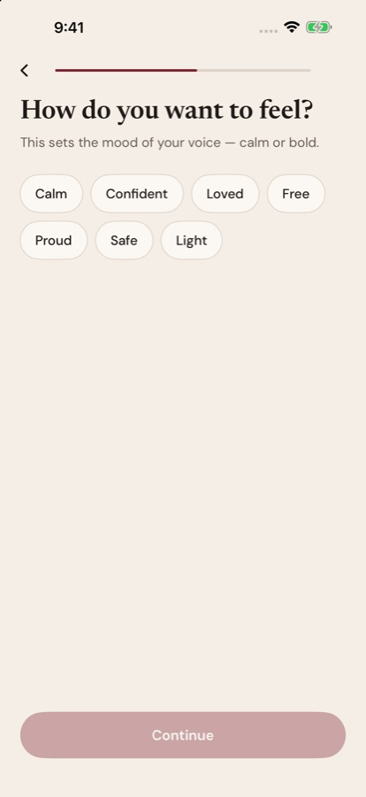
{kind=link}
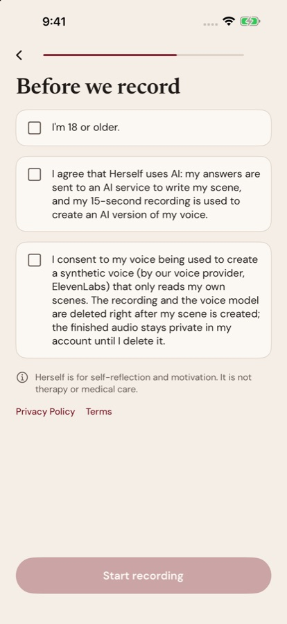
{kind=link}
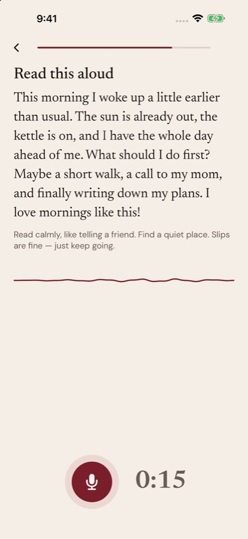
{kind=link}
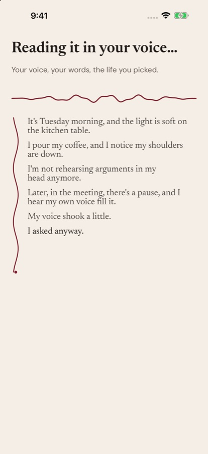
{kind=link}
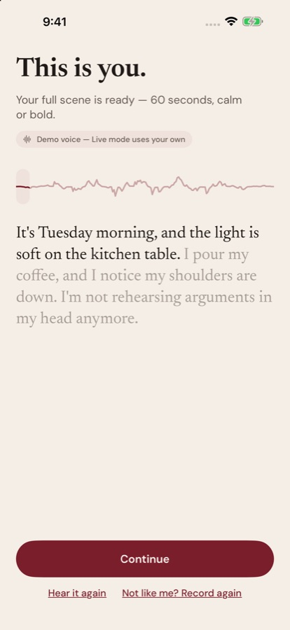
{kind=link}
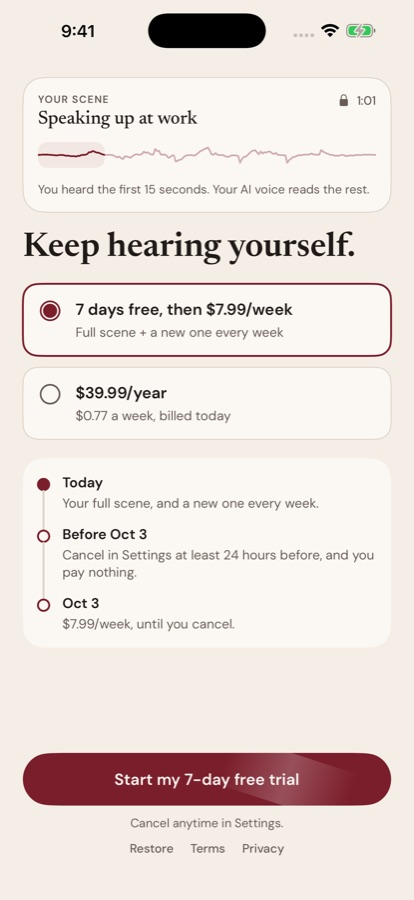
{kind=link}
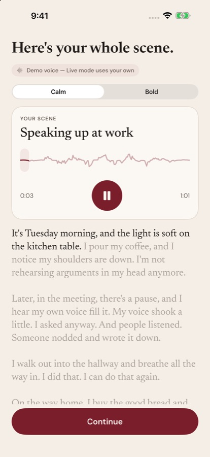
{kind=link}
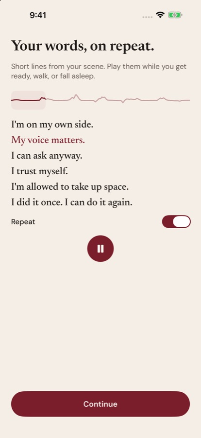
{kind=link}
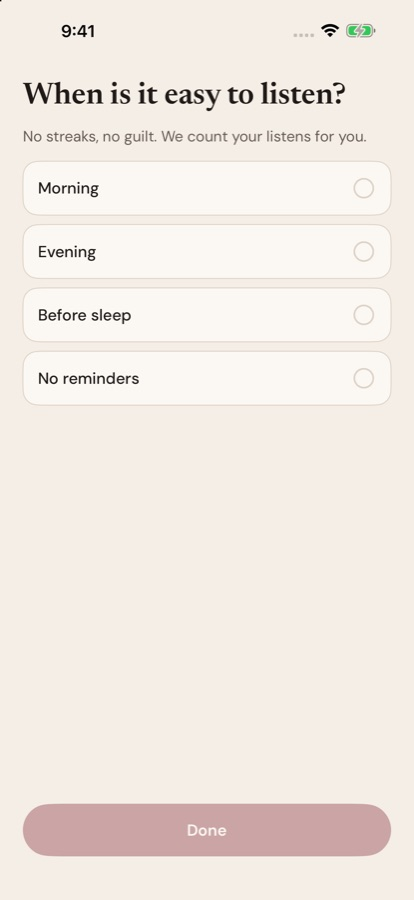
{kind=link}
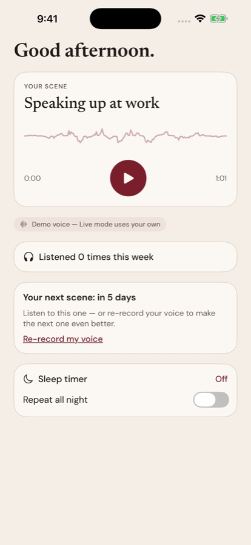
Онбординг Herself собран в SwiftUI (HerselfManifest/) и работает на симуляторе «Herself 17 Pro Max» (iOS 26.5). Экраны по docs/ONBOARDING.md, дизайн — Oxblood Editorial (D9), шрифты Newsreader + Caveat «own voice» + DM Sans (D10).
Путь пользовательницы:
- A1 — хук, повторяет скриншот 1.
- A3 — «Read 15 seconds aloud».
- B1–B3 — чипы.
- C — согласие.
- D — запись 15 с.
- E — создание сцены.
- F — превью.
- G — жёсткий пейвол.
- H1–H4 — полная сцена, фразы на повтор, «когда слушать», главный экран.
Файлы:
- видео —
motion.mp4/static.mp4; - все экраны —
screens/.
Технология из твита @ajith_io
Программная, «кодовая» анимация (programmatic motion graphics). ИИ пишет не картинку, а код анимации, и код рендерится в видео. Инструмент в твите не назван. Обычно это HTML/SVG/Canvas + GSAP или React-движок Remotion, потом рендер в MP4.
У нас то же самое сделано нативно, кодом SwiftUI, без видеофайлов:
TimelineView+Canvas— живая линия голоса;- переходы SwiftUI (fade + 8 pt) — сборка сцены строка за строкой.
Для App Preview в сторе тот же приём даёт HTML/Canvas → MP4.
Где стоит motion и зачем
| Экран | Что движется | Зачем |
|---|---|---|
| A1 | чужие «универсальные» аффирмации всплывают и гаснут, под заголовком «дышит» линия голоса | «чужое — не твоё» до обещания |
| A3 | волна голоса расходится на две нити, сплетается и становится одной ровной нитью | абстракция клона без слова «клон» |
| D | ореол кнопки записи дышит с её громкостью, линия голоса идёт в реальном времени | «меня слышат», запись удалась |
| E | линия её голоса сверху, от неё вниз идёт нить, строки сцены «пришиваются» по мере шагов | видимая работа: ожидание 20–30 с читается как работа для неё |
| F, H1 | караоке-субтитры по фразам, прослушанная часть линии подсвечена | «это мой голос читает мои слова» |
| G | её линия в шапке пейвола, мягкий блик на кнопке | тихо, без давления |
Правила из дизайн-системы:
- одна непрерывная линия, никаких столбиков;
- без пружин, блёсток и космоса;
- вход — fade + 8 pt, 240 мс;
- при Reduce Motion всё статично.
Добавит ли доверия и конверсии
Да, там, где анимация показывает механизм и работу; нет — где она украшает.
- Экран создания (E). Главное место. Эффект «видимой работы» (labor illusion, Buell & Norton, Harvard Business School): когда человеку показывают процесс, ожидание переносится легче, а результат ценится выше. Статичный спиннер 20–30 с — место, где бросают.
- Запись и превью. Анимация подтверждает главное обещание — «это мой голос». Это доверие к продукту, а не украшение.
- Декор вредит. В консилиуме по картинкам галактика и «магия» получили доверие 0,01 (
research/imagery-2026-09-26/). Поэтому никакой «магии» в движении. - Как проверить. Jev анимацию не видит. Проверка такая: 1. основатель проходит оба варианта (переключатель «Motion design» в отладке, видео ниже); 2. после запуска — A/B-тест на реальном трафике (удалённый флаг): доля дошедших до превью, превью → триал,
first_value_reached.
Кнопка отладки (плавающий ключ)
Есть только в Debug-сборке и в TestFlight с флагом TESTFLIGHT_TOOLS. В Release её нет — проверено по бинарнику. Ключ можно перетащить в любое место. Что в панели:
- Jump to screen — любой из 14 экранов;
- Variants under test: - Motion design вкл/выкл; - Simulate Reduce Motion; - «Record + preview before paywall» — порядок из APPROVALS; - Voice: Demo / Live; - светлая/тёмная тема;
- State — пройти пейвол, заблокировать, сбросить всё;
- Analytics journal — события из ONBOARDING.md вживую.
Аргументы запуска:
-herself.screen <экран>;-herself.reset YES;-herself.debug.motion NO;-herself.debug.hideBubble YES— для записей.
Голос: Demo и Live
- Demo (по умолчанию) — стоковый голос ElevenLabs Sarah, сцена «Speaking up at work» (
Resources/Demo/,research/voice-test-2026-09-26/render_demo.py). Клона и чужого голоса нет. - Live —
scripts/dev_voice_server.pyна Mac, порт 8791. Он делает: 1. клон из её записи; 2. сцену на английском через DeepSeek, с доработкой по длине; 3. calm, bold и фразы параллельно; 4. удаление клона.
Ключи остаются на Mac. Проверено на записи Нат (с согласием): 34 с от запроса до готовых трёх дорожек, клон удалён (200). Каждый запуск тратит одно создание голоса из 65 в месяц (Starter). ElevenLabs не даёт клонировать стоковые голоса («voice_access_denied»), поэтому тест — только на живом голосе с согласием.
Как запустить
`` scripts/run_sim.sh --reset # собрать и запустить с A1 scripts/run_sim.sh paywall # сразу на экран scripts/run_sim.sh record --live # запись → свой голос (поднимает сервер) ` Simulator.app в этой установке Xcode 27 нет. Симулятор работает без окна (скриншоты и видео через simctl io). Чтобы потрогать руками, нужен Mac с Simulator или сборка в TestFlight с ключом отладки (решение — в APPROVALS.md`).
Что ещё не сделано
- Покупки идут через StoreKit 2 с локальным
Herself.storekit. В App Store Connect ещё нет продуктов и нет проекта RevenueCat. При запуске без Xcode покупка в Debug симулируется. - Карточки желаний (B4), кризисные слова, App Attest и лимит превью сделает бэкенд.
- Проверка записи — только длина и громкость. Нет SoundAnalysis и совпадения слов.
- Страниц Privacy и Terms на сайте ещё нет: ссылки ведут на будущие адреса.